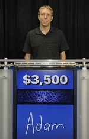
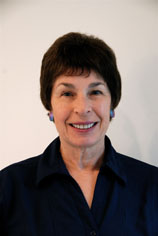
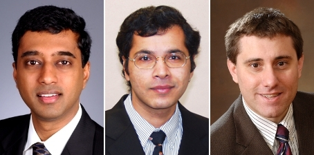

Keynote Speakers
Adam Lally, Lori A. Clarke and
Chandrasekhar Boyapati, Sarfraz Khurshid and Darko Marinov
Adam Lally
IBM DeepQA Project Team
Adam Lally is a Senior Technical Staff Member at IBM's T. J. Watson Research Center. Adam is an experienced systems architect and software developer. As a member of the DeepQA Algorithms Team he helped develop the Watson system architecture that gave the machine its speed. He also worked on the natural language processing algorithms that enable Watson to understand questions and categories and gather and assess evidence in natural language.
Before working on Watson he was the lead software engineer for the Unstructured Information Management Architecture (UIMA) project, an open source platform for creating, integrating and deploying unstructured information management solutions.
IBM's DeepQA project and the Watson system use UIMA as their principal infrastructure for assembling, scaling out and deploying all the analytic components.
Adam received a BS in Computer Science from Rensselaer Polytechnic Institute in 1998 and an MS in Computer Science from Columbia University in 2006.
IBM Watson: Beyond Jeopardy! — Abstract
In 2007 IBM began a quest to push the boundaries of automated open-domain question answering - that is, to get a computer to understand and answer natural language questions over a broad range of topics by analyzing and learning from large volumes of text.
Four years later, IBM introduced Watson, a computer system capable of quickly and precisely answering natural language questions with accurate confidence estimation. To demonstrate this technology, IBM pitted Watson against the world's best Jeopardy! players in a formal Jeopardy! contest. Watson was victorious in an historic match that was aired on national television in February, 2011.
Beating the best human contestants at Jeopardy! represents a major landmark in open-domain question answering. The accomplishment marks just the beginning of a new era of computing. While deep analysis and language understanding techniques have a long way to go before computers can fluently interact and reason at human levels, Watson today offers an advanced software architecture and methodology that promises to leverage and rapidly advance decades of innovation in the field, creating opportunities in IT that we have only just imagined. Watson's public performance heralds a future where scientists and businesspeople alike can efficiently tap into the wealth of knowledge buried in text and other unstructured data sources.
This talk will give an overview of how Watson was built and present our vision for the future of the technology.
Lori A. Clarke
University of Massachusetts Amherst, Department of Computer Science
Lori A. Clarke is chair the Department of Computer Science at the University of Massachusetts, Amherst, and co-director of the Laboratory for Advanced Software Engineering Research (LASER). She is a Fellow of the ACM and IEEE, and a board member of the Computing Research Association's Committee on the Status of Women in Computing Research (CRA-W). She is a former vice chair of the Computing Research Association (CRA), co-chair of CRA-W, IEEE Publication Board member, associate editor of ACM TOPLAS and IEEE TSE, member of the CCR NSF advisory board, and ACM SIGSOFT chair, vice chair, secretary, and treasurer. Recent honors include the 2011 University of Massachusetts Outstanding Accomplishments in Research and Creative Activity Award, the 2009 College of Natural Sciences and Mathematics Outstanding Faculty Service Award, the 2004 University of Colorado, Boulder Distinguished Engineering Alumni Award, and the 2002 SIGSOFT Distinguished Service Award.
Dr. Clarke's research is concerned with the verification of distributed systems and requirements engineering. Recently she has been investigating applying software engineering technologies to detect errors and vulnerabilities in complex processes in domains such as healthcare, scientific workflow, and digital government. She is also involved in several efforts to increase participation of underrepresented groups in computing research.
Program Analysis: Then and Now — Abstract
Program analysis techniques have played an important role in improving the verification and testing of software systems. In the early days of software engineering, the research community was very naïve, expecting to find "the solution" to the software engineering crisis. Without the ability to conduct extensive evaluation, this often led to ideological wars. Increased computing power, open source systems, and more research maturity has led to a renaissance in program analysis research. This talk will overview some of the major accomplishments in program analysis that are feeding this revitalization, describe some of the past hurdles that researchers faced, and discuss some of the current impediments and opportunities.
Chandrasekhar Boyapati, Sarfraz Khurshid and Darko Marinov
Chandrasekhar Boyaparti, Google; Sarfraz Khurshid, University of Texas at Austin; Darko Marinov, University of Illinois at Urbana-Champaign
2012 Impact Award — Abstract
At ISSTA 2002, three Ph.D. students published the paper "Korat: Automated Testing Based on Java Predicates", which won one of the first ACM SIGSOFT Distinguished Paper awards. This year, the paper wins the ACM SIGSOFT Impact Paper Award. In this talk, we recount the motivation behind our research, the ideas presented in the paper, and some influence it had on software testing during the last ten years. We also reflect on our experience of leading a research project as Ph.D. students.